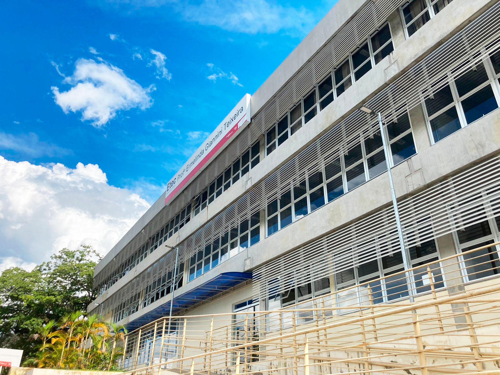
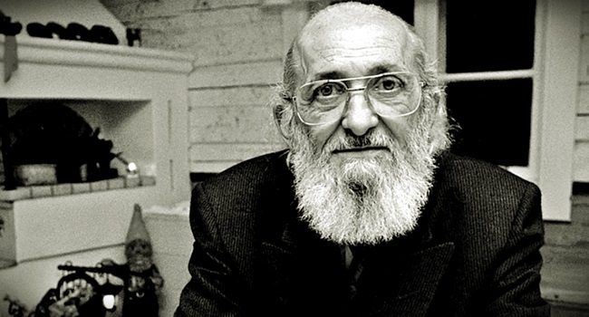

Paulo Freire (1921-1997) was an influential Brazilian educator, known for his innovative approach to adult literacy, combining rapid learning with civic engagement through debate.
Although it was widely acclaimed internationally,Freire faced controversy in his
own country, mainly due to the association of his work with 20th century communist ideologies.
After a season abroad, he returned in 1979, benefiting from the Geisel government's amnesty. Settling in São Paulo, he entered politics, becoming Secretary of Education during Luiza Erundina's term, in addition to teaching at UNICAMP and PUC.
Born in Recife, Pernambuco, on September 19, 1921, Freire grew up in Jaboatão dos Guararapes after the death of his father when he was just 13 years old. His mother took on the difficult task of supporting the family.

After receiving assistance to continue his studies, Freire entered the Faculty of Law of Recife in 1943. At the same time, he taught Portuguese language and philosophy of education.
In 1947, he was appointed director of the Department of Education and Culture of the
Service Pernambuco Social. He founded the Capibaribe Institute in 1955, a pioneering institution that continues in activity.
For his educational contributions, Freire received numerous Honorary Doctorate degrees from several universities around the world, including Harvard, Cambridge and Oxford. In 1986, he was awarded the UNESCO Prize for "Education for Peace".
Freire was married twice, first to Elza Maria Costa de Oliveira, with whom he had five children, and then to Ana Maria Araújo Freire, known as Nita Freire.
He died in São Paulo on May 2, 1997, due to complications from heart failure. His work continues to influence education and the fight for social justice around the world.